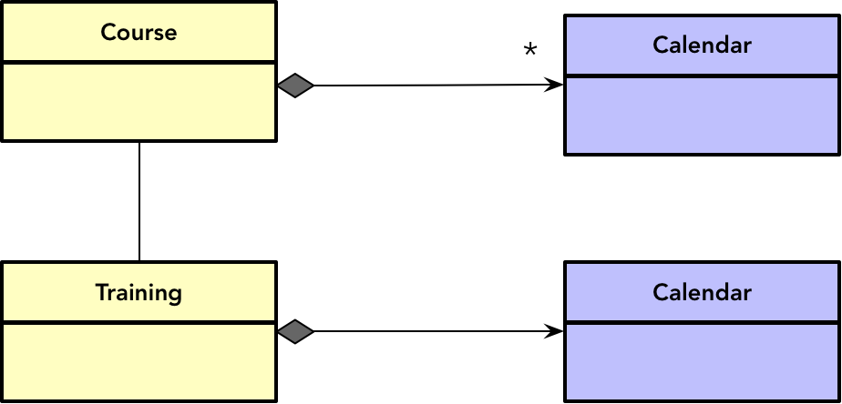
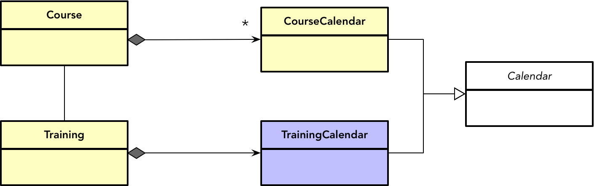
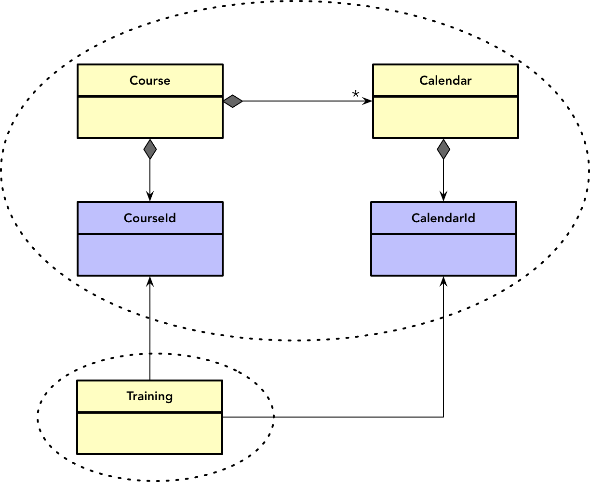
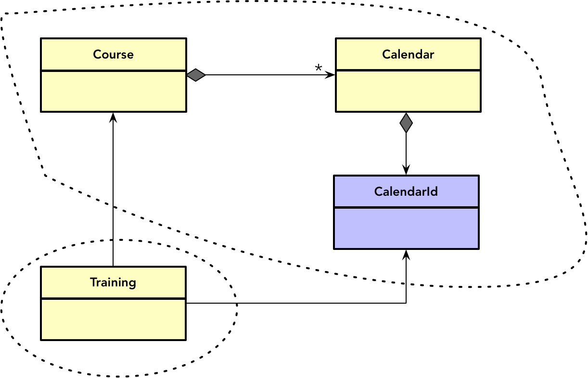
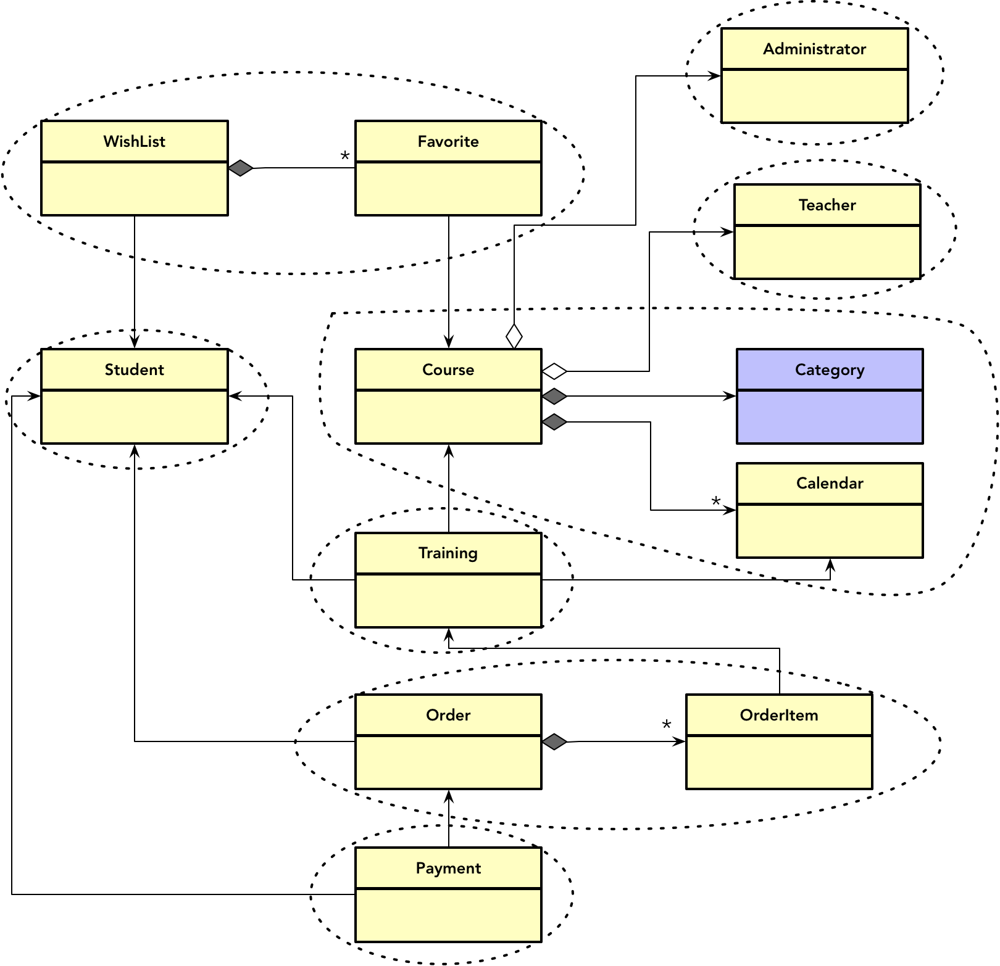

- 001 「战略篇」访谈 DDD 和微服务是什么关系？.md.html
- 002 「战略篇」开篇词：领域驱动设计，重焕青春的设计经典.md.html
- 003 领域驱动设计概览.md.html
- 004 深入分析软件的复杂度.md.html
- 005 控制软件复杂度的原则.md.html
- 006 领域驱动设计对软件复杂度的应对（上）.md.html
- 007 领域驱动设计对软件复杂度的应对（下）.md.html
- 008 软件开发团队的沟通与协作.md.html
- 009 运用领域场景分析提炼领域知识（上）.md.html
- 010 运用领域场景分析提炼领域知识（下）.md.html
- 011 建立统一语言.md.html
- 012 理解限界上下文.md.html
- 013 限界上下文的控制力（上）.md.html
- 014 限界上下文的控制力（下）.md.html
- 015 识别限界上下文（上）.md.html
- 016 识别限界上下文（下）.md.html
- 017 理解上下文映射.md.html
- 018 上下文映射的团队协作模式.md.html
- 019 上下文映射的通信集成模式.md.html
- 020 辨别限界上下文的协作关系（上）.md.html
- 021 辨别限界上下文的协作关系（下）.md.html
- 022 认识分层架构.md.html
- 023 分层架构的演化.md.html
- 024 领域驱动架构的演进.md.html
- 025 案例 层次的职责与协作关系（图文篇）.md.html
- 026 限界上下文与架构.md.html
- 027 限界上下文对架构的影响.md.html
- 028 领域驱动设计的代码模型.md.html
- 029 代码模型的架构决策.md.html
- 030 实践 先启阶段的需求分析.md.html
- 031 实践 先启阶段的领域场景分析（上）.md.html
- 032 实践 先启阶段的领域场景分析（下）.md.html
- 033 实践 识别限界上下文.md.html
- 034 实践 确定限界上下文的协作关系.md.html
- 035 实践 EAS 的整体架构.md.html
- 036 「战术篇」访谈：DDD 能帮开发团队提高设计水平吗？.md.html
- 037 「战术篇」开篇词：领域驱动设计的不确定性.md.html
- 038 什么是模型.md.html
- 039 数据分析模型.md.html
- 040 数据设计模型.md.html
- 041 数据模型与对象模型.md.html
- 042 数据实现模型.md.html
- 043 案例 培训管理系统.md.html
- 044 服务资源模型.md.html
- 045 服务行为模型.md.html
- 046 服务设计模型.md.html
- 047 领域模型驱动设计.md.html
- 048 领域实现模型.md.html
- 049 理解领域模型.md.html
- 050 领域模型与结构范式.md.html
- 051 领域模型与对象范式（上）.md.html
- 052 领域模型与对象范式（中）.md.html
- 053 领域模型与对象范式（下）.md.html
- 054 领域模型与函数范式.md.html
- 055 领域驱动分层架构与对象模型.md.html
- 056 统一语言与领域分析模型.md.html
- 057 精炼领域分析模型.md.html
- 058 彩色 UML 与彩色建模.md.html
- 059 四色建模法.md.html
- 060 案例 订单核心流程的四色建模.md.html
- 061 事件风暴与业务全景探索.md.html
- 062 事件风暴与领域分析建模.md.html
- 063 案例 订单核心流程的事件风暴.md.html
- 064 表达领域设计模型.md.html
- 065 实体.md.html
- 066 值对象.md.html
- 067 对象图与聚合.md.html
- 068 聚合设计原则.md.html
- 069 聚合之间的关系.md.html
- 070 聚合的设计过程.md.html
- 071 案例 培训领域模型的聚合设计.md.html
- 072 领域模型对象的生命周期-工厂.md.html
- 073 领域模型对象的生命周期-资源库.md.html
- 074 领域服务.md.html
- 075 案例 领域设计模型的价值.md.html
- 076 应用服务.md.html
- 077 场景的设计驱动力.md.html
- 078 案例 薪资管理系统的场景驱动设计.md.html
- 079 场景驱动设计与 DCI 模式.md.html
- 080 领域事件.md.html
- 081 发布者—订阅者模式.md.html
- 082 事件溯源模式.md.html
- 083 测试优先的领域实现建模.md.html
- 084 深入理解简单设计.md.html
- 085 案例 薪资管理系统的测试驱动开发（上）.md.html
- 086 案例 薪资管理系统的测试驱动开发（下）.md.html
- 087 对象关系映射（上）.md.html
- 088 对象关系映射（下）.md.html
- 089 领域模型与数据模型.md.html
- 090 领域驱动设计对持久化的影响.md.html
- 091 领域驱动设计体系.md.html
- 092 子领域与限界上下文.md.html
- 093 限界上下文的边界与协作.md.html
- 094 限界上下文之间的分布式通信.md.html
- 095 命令查询职责分离.md.html
- 096 分布式柔性事务.md.html
- 097 设计概念的统一语言.md.html
- 098 模型对象.md.html
- 099 领域驱动设计参考过程模型.md.html
- 100 领域驱动设计的精髓.md.html
- 101 实践 员工上下文的领域建模.md.html
- 102 实践 考勤上下文的领域建模.md.html
- 103 实践 项目上下文的领域建模.md.html
- 104 实践 培训上下文的业务需求.md.html
- 105 实践 培训上下文的领域分析建模.md.html
- 106 实践 培训上下文的领域设计建模.md.html
- 107 实践 培训上下文的领域实现建模.md.html
- 108 实践 EAS 系统的代码模型.md.html
- 109 后记：如何学习领域驱动设计.md.html
071 案例 培训领域模型的聚合设计
聚合是领域驱动战术设计最为核心的概念，若能合理运用，就能极大地改善领域设计模型的质量。只有设计出高质量的聚合，才能充分利用聚合边界的控制力，达成领域逻辑与技术实现之间的平衡。下面，我将针对第 6-6 课给出的培训管理系统，为该系统的模型引入聚合。
数据设计模型
第 6-6 课，我们通过数据模型驱动设计的方式获得了如下的设计模型：
正如我在第 6-4 课分析数据模型驱动设计的问题时所说：“在数据库和数据表之间，缺少合适粒度的概念去维护数据实体的边界。”我们获得的这个模型已经出现了复杂对象图的端倪，其中，最大的设计问题就是对象之间的遍历关系。例如 Training 类组合了 Student 类、Course 类和 Calendar 类：
@Data
public class Training {
private String id;
private Student student;
private Course course;
private Calendar calendar;
private double price;
private Timestamp subscribedTime;
private Timestamp createdAt;
private Timestamp updatedAt;
}
Order 类组合了 Student 类和 OrderItem 类：
@Data
public class Order {
private String id;
private Student student;
private OrderStatus status;
private Timestamp placedTime;
private Timestamp createdAt;
private Timestamp updatedAt;
private List<OrderItem> orderItems;
public Order() {
this.id = UUID.randomUUID().toString();
}
public Order(String orderId) {
this.id = orderId;
}
}
而 OrderItem 类却又组合了 Training 类：
@Data
public class OrderItem {
private String id;
private String orderId;
private Training training;
private Timestamp createdAt;
private Timestamp updatedAt;
}
整个设计模型由多个彼此关联引用的类组成，形成了一个相对复杂的对象图。类之间的协作没有边界的控制，对象之间的导航方向也没有任何约束。实际上，案例中的 OrderMapper.xml 文件所包含的 SQL 语句已经暴露了非常明显的问题。为了获得培训的订单，该 SQL 语句通过 LEFT JOIN 一共关联了包括 t_order、t_student 与 t_order_item 在内的七张数据表。如果每张数据表都存储了较大数据量，这种无节制的关联会极大地拖慢数据库查询的性能。
引入聚合，给对象图划定边界，可以有效地解决这些问题。
通过聚合改进设计模型
即使是数据设计模型，我们也可以通过引入聚合来改进它。当然，改进后的模型更应该称为领域设计模型。接下来，我将运用庖丁解牛的聚合设计过程，一步一步改进已有的设计模型。
第一步：理顺对象图
我们可以将已有的设计模型视为映射现实世界的一个对象图。首先，我们需要理顺对象图，确认领域模型对象究竟是实体还是值对象，然后理清他们之间的关系，并确保类之间的单一导航方向。
整个设计模型的大多数领域对象都拥有身份标识，除了 Category 和 Calendar。体现课程类别的 Category 是一个值对象，譬如说两个 Category 实例的值都是“软件架构”，则不管它们的 ID 是多少，都应该视为同一个课程类别。Calendar 也当如此，根据日程的值，即起止日期与授课地址判断其相等性。
审视这些模型类之间的关系，我认为之前建模时定义的 Course 与 Administrator、Teacher 之间的关系应当弱化，虽然课程确实是由管理员创建，也必须指定授课教师，但它们并非课程的本质属性，生命周期也不一致，不应该被建模为“物理包容”的合成关系。
课程可以被加入到不同学生的期望列表中，期望列表也可以加入多个课程，因此，WishList 与 Course 之间存在多对多关系。当学生将课程添加到期望列表时，可以认为是学生添加了对该门课程的收藏，于是可以引入 Favorite 类，由其关联 Course 类，而 WishList 与 Favorite 之间则形成一对多的合成关系。
在确定 Course、Training 与 Calendar 三者之间关系时，可谓几经周折。一个课程在上架时，管理员可以设置多个日程，学生可以选择符合自己时间安排的合适课程，这时就会形成一个培训。这就意味着 Course 包含了多个 Calendar，而 Training 既指向了 Course，又指向了一个确定的 Calendar。如前所述，我认为 Calendar 是一个值对象，因此可以复制 Calendar 的副本，让它们分别与 Course 和 Training 产生关联：

然而，Course 与 Calendar 之间存在一对多关系，在对象设计中需要定义一个集合属性来表示多个日程。该如何区分集合中的不同日程对象？当用户修改课程中指定日程的值时，又该通过什么值来确定目标日程呢？如果为日程引入身份标识，将 Calendar 改为实体，这些问题就迎刃而解了。
一旦 Calendar 被定义为实体，就无法像值对象那样以复制副本的方式分别与 Training 和 Course 产生关联了。由于培训的日程必须是一个确定的日程，则意味着培训日程与课程日程是两个不同的领域概念，其中，培训日程仅仅是 Training 实体的一个组合属性，应被定义为值对象。由于这两个领域概念存在共同逻辑，因此可以建立继承体系，抽象出 Calendar 作为这两个领域概念的父类。其中，CourseCalendar 被定义为实体，TrainingCalendar 被定义为值对象：

这样的设计既满足了 Course 和 Training 的不同需求，又避免了重复代码，左右逢源，看起来似乎很美好。然而，该设计实际上彻底地分开了课程日程与培训日程，除了重用逻辑之外，它们互不相干。那么，当用户修改了课程日程的值时，培训日程要不要同步变更呢？如果不响应此修改，就会导致培训日程和课程日程不一致。要让数据保持一致，又不希望进行同步变更，唯一的办法就是通过对象引用的方式建立 Training 与 Calendar 之间的关系：
在确定了实体与值对象以及各个对象之间的关系后，接下来还需要明确对象间的导航方向。在理顺对象图的过程中，需要在模型中通过箭头标记导航方向。倘若现实世界对应的两个概念之间存在双向依赖，就需要去掉其中一个导航方向。例如，Student 与 Training 之间存在多对多关系，一个学生可以参加多次培训，一个培训也可以有多个学生参加。如果站在学生的角度，就应该为 Student 定义 List
第二步：分解关系薄弱处
理清了各个对象之间的关系后，即可分解关系薄弱处。通过辨识合成和继承关系，就可以轻而易举寻找到关系薄弱处，然后分解之。当前模型并无继承关系，故而只需关注合成关系。让我们率先来一个干净利落的分解：
分解时，务求斩钉截铁，不用担心聚合的边界识别有误，因为后面还要运用聚合设计原则审视这一设计。设计者能够承担的知识量有限，每一步只需要达成一个目标即可。显然，前面这两个步骤不过是除掉遍布模型四周的荒芜杂草，使得领域设计模型的真相能够清晰地浮现出来。
第三步：调整聚合边界
现在是运用聚合设计原则调整聚合边界的时候了。我们分别从完整性、独立性、不变量与事务逐一对每个聚合进行检查。如果没有不变量与事务的约束，应优先考虑聚合边界内的概念独立性。同时，我们还需要考察聚合之间的关系，不能让它们违背了聚合内外部之间协作的基本规则，这些规则都是设计的“红线”！
模型中业已识别出来的大多数聚合没有争议，一目了然。Course 与 Administrator、Teacher 之间的关系稍微复杂一些，由于课程必须由管理员创建，且必须指定教师，从概念完整性看，似乎三者应该放在一个聚合中。但是，确定概念是否完整有一个判断依据，即聚合内的对象应该具有一致的生命周期。显然，Administrator 与 Teacher 的生命周期与 Course 完全无关。同时，Administrator 与 Teacher 也需要独立访问与管理，因而应为其建立独立的聚合。
在检查聚合之间的协作关系时，我们发现 Course、Training 与 Calendar 三者之间的协作存在不当之处。按照聚合协作的规则，一个聚合的非聚合根实体不允许被聚合外部的对象直接引用，但 Training 到 Calendar 的导航却踩到了设计的“红线”：
该怎么解决这一问题？一种简单地方法是将 Calendar 实体独立为一个聚合。然而分析需求，我们发现 Course 与 Calendar 之间存在着不变量的约束关系，例如同一个课程不能指定两个日期存在重叠的日程，两个相邻的日程必须间隔规定的天数。这个不变量需要通过 Course 聚合根来保障，防止被外部调用者破坏，因此需要将它们放在一个聚合中，实现代码如下：
public class Calendar extends Entity<CalendarId> implements Comparable<Calendar> {
private final String place;
private final LocalDate startDate;
private final LocalDate endDate;
private final CalendarStatus status;
...
public boolean isOverlap(Calendar targetCal) {
return isStartDateBetween(targetCal) || isEndDateBetween(targetCal);
}
public boolean beyond(Calendar targetCal, long days) {
if (isOverlap(targetCal)) {
return false;
}
return isAfter(targetCal, days) || isBefore(targetCal, days);
}
private boolean isAfter(Calendar targetCal, long days) {
LocalDate beSubtracted = startDate.minusDays(days);
return beSubtracted.isAfter(targetCal.getEndDate());
}
private boolean isBefore(Calendar targetCal, long days) {
LocalDate beAdded = endDate.plusDays(days);
return beAdded.isBefore(targetCal.getStartDate());
}
private boolean isStartDateBetween(Calendar targetCal) {
LocalDate targetStartDate = targetCal.getStartDate();
return targetStartDate.isAfter(startDate) && targetStartDate.isBefore(endDate) || targetStartDate.isEqual(startDate);
}
private boolean isEndDateBetween(Calendar targetCal) {
LocalDate targetEndDate = targetCal.getEndDate();
return targetEndDate.isAfter(startDate) && targetEndDate.isBefore(endDate) || targetEndDate.isEqual(endDate);
}
@Override
public int compareTo(Calendar o) {
if (isBefore(o, 0l)) return -1;
if (isAfter(o, 0l)) return 1;
return 0;
}
@Override
public boolean equals(Object o) {...}
@Override
public int hashcode() {...}
}
public class Course extends Entity<CourseId> implements AggregateRoot<Course> {
private static final long DAYS = 7l;
private List<Calendar> calendars = new ArrayList<>();
public void addCalendar(Calendar calendar) {
// 实现不变量
if (calendars.stream().anyMatch(c -> c.isOverlap(calendar) || !c.beyond(calendar, DAYS))) {
throw new CourseException(String.format("Can't add the invalid calendar into the course."));
}
calendars.add(calendar);
}
}
Calendar 实体提供了自给自足的验证能力，Course 聚合根与 Calendar 实体协作，调用了它的验证方法，对外则公开了添加 Calendar 实例的方法。该方法实现了不变量，可避免外部调用者添加破坏不变量的日程。
如果将 Calendar 独立为一个专门的聚合，这一不变量就无法保障了。既然独立为聚合的路子走不通，去掉 Training 对 Calendar 的引用又势在必行，就回到了聚合协作的最佳实践：通过身份标识进行聚合之间的协作。虽然协作原则要求“聚合外部的对象不能引用除根实体之外的任何内部对象”，但并没有限制对这些内部对象身份标识的引用，即 Training 不引用 Calendar 实体，转而引用它的身份标识 CalendarId。同时，Training 与 Course 聚合之间的协作也将通过 CourseId：

既然聚合之间的协作必须通过身份标识是我们的设计共识，领域设计模型就无需在聚合之间特别引入身份标识值对象来表达这种关系，故而上述模型可以省略为：

Training 聚合通过 CourseId 与 Course 建立了关系，但它并不关心课程的所有日程，而仅限于学生订阅课程时选择的日程。这里隐含了一个不变量，即订阅课程时，需要选择课程的日程。由于订阅课程的业务含义就是生成一个培训，因此该不变量应由 Training 聚合实现：
public class Training extends Entity<TrainingId> implements AggregateRoot<Training> {
...
public Training(CourseId courseId, CalendarId calendarId) {
this.courseId = courseId;
this.calendarId = calendarId;
}
}
通过构造函数可以要求调用者必须设置 CalendarId，但这等约束并不足以保证不变量，因为调用者有可能提供一个错误的或者不属于当前课程的日程。要验证设置给培训的日程属于课程日程的其中一个，需要用到 Course 类的日程信息，因而只能由 Course 聚合来限制对 Training 实例的创建：
public class Course extends Entity<CourseId> implements AggregateRoot<Course> {
private List<Calendar> calendars = new ArrayList<>();
public Training createFrom(CalendarId calendarId) {
if (notContains(calendarId)) {
throw new TrainingException("Selected calendar is not scheduled for current course.");
}
return new Training(this.id, calendarId);
}
private boolean notContains(CalendarId calendarId) {
return calendars.stream().allMatch(c -> c.id().equals(calendarId));
}
}
Training 聚合必须满足一个不变量：培训的订阅数量必须小于等于开放的培训名额。要满足该不变量，需要考虑预订培训的竞争条件，避免因为并发访问的缘故导致订阅数量超出名额限制：
public class Training extends Entity<TrainingId> implements AggregateRoot<Training> {
private List<StudentId> students = Collections.synchronizedList(new ArrayList<>());
public void subscribedBy(StudentId studentId) throws TrainingException {
synchronized (studentId) {
if (students.contains(studentId)) {
throw new TrainingException("Can't be subscribed repeatly.");
}
if (students.size() >= seats) {
throw new TrainingException("The seats of training are all occupied.");
}
students.add(studentId);
seats++;
}
}
}
从事务的角度看，WishList 与 Favorite，Order 与 OrderItem 都必须保证事务的一致性。Training、Order 与 Payment 之间则不然，学生在订阅了课程后，会生成一次培训。一旦学生决定购买此课程，才会将其加入到订单中，最后对订单进行支付。这三者之间并不要求所有记录的创建必须共同成功或者共同失败。既然对培训、订单与支付没有事务范围的要求，当然可以依据概念完整性与独立性分别为其建立三个单独的聚合了。
经过这样的分析梳理之后，我们得到了如下的领域设计模型：

注意： 领域设计模型中关于聚合之间的协作，均采用身份标识建立关联。为保持精简，模型图中没有为每个聚合列出专有的 Identity 类。
对比第二步获得的初步模型与最终获得的领域设计模型，你会发现二者的差异非常小。这是因为通过对对象图的梳理之后，依据依赖关系强弱分解的聚合边界已经相对合理了。但它的正确性缺乏验证，因而需要在第三步依据聚合设计的原则去分别验证每个聚合的边界。经历了这样的设计过程后，虽不能说最终获得的领域设计模型能够一劳永逸，但却能最大程度地保证模型的合理性。